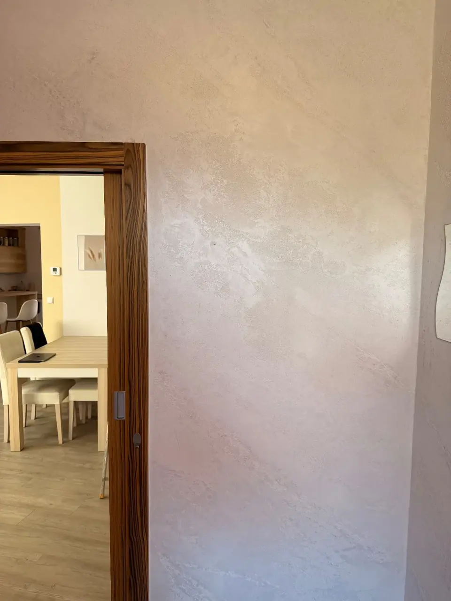
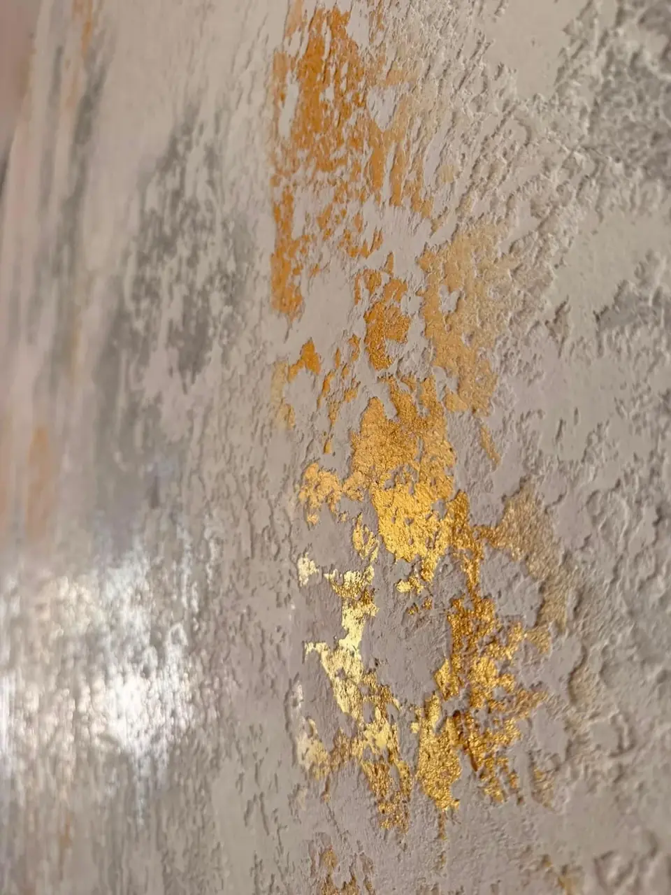

Mikrocement v koupelně Brno
Nový vzhled koupelny bez bourání obkladu. Mikrocement vytvoří souvislý povrch i přes vhodný obklad. Nejdřív ověříme podklad, po práci uklidíme.
- 5,0 z 29 recenzí na Googlu
- Ozveme se do 24 hodin
- Brno a okolí do 20 km
Schéma vrstev podle našeho postupu, nejde o fotku. [doplnit: fotka vlastní koupelny s mikrocementem, ideálně před a po]
Kdy jde mikrocement přes obklad
Mikrocement vydrží jen na pevném podkladu. Před prací proto ověříme soudržnost obkladu, spáry a vlhkost a rovnou vám řekneme, jestli je váš povrch vhodný.
- Pevný a soudržný obkladObklad bez dutých míst překryjeme souvislou vrstvou. Ušetříte si bourání a nepořádek, který k němu patří.
- Vyrovnání spár a penetracePovrch očistíme, odmastíme, opravíme a připravíme pro další vrstvy.
- Mokré zónySkladba a ochrana závisí na kontaktu s vodou a stavu podkladu. Sprchový kout posoudíme individuálně.
- Kdy to nejdeNa obklad s dutými místy nebo aktivními poruchami mikrocement nedáme. Řekneme vám to dřív, než začneme.
Koupelny s mikrocementem
[doplnit: 3 až 6 fotek vlastních koupelen. Bez nich reklamu na tuto stránku nespouštět.] Vedle jsou naše ruční stěrky na stěnách bez obkladu.




Jak mikrocement vzniká
Postup podle dnešní stránky webu. Fotky z průběhu doplníme, až budou z vaší první koupelny.
Kontrola podkladu
Prověříme obklad, spáry, rovinnost, vlhkost a způsob používání prostoru.
Příprava a sjednocení
Povrch očistíme, odmastíme, opravíme a připravíme pro další vrstvy.
Vrstvy mikrocementu
Vytvoříme jednotlivé vrstvy a výslednou kresbu povrchu.
Ochrana a předání
Povrch uzavřeme, vysvětlíme údržbu a dobu před plným zatížením.
Co je v ceně mikrocementu
Cenu počítáme podle plochy a stavu podkladu. Příprava, zakrytí i úklid jsou v ceně, kterou vám předem potvrdíme.
- Kontrola podkladuObklad, spáry, rovinnost, vlhkost a způsob používání prostoru.
- Příprava a sjednoceníOčištění, odmaštění, opravy a penetrace.
- Vrstvy mikrocementuJednotlivé vrstvy a kresba povrchu sladěná s interiérem.
- Ochrana a předáníUzavření povrchu, vysvětlení údržby a doby do plného zatížení.
- Zakrytí a úklidOkolí zakryjeme a po práci uklidíme.
- Použitý systém[doplnit: jaký systém mikrocementu používáte?]
Kolik stojí mikrocement
[doplnit: od … Kč/m² práce, doplní majitel]
Stačí fotky obkladu a spár, rozměry a představa o vzhledu. [doplnit: ceny s DPH, nebo bez?]
Chci cenu mikrocementu- Plocha a tvarmetry čtvereční, rohy, niky a detaily
- Stav obkladu a spársoudržnost, členitost a vyrovnání
- Prostředíkuchyň, obytný prostor nebo koupelna
- Barva a strukturazvolený odstín a charakter povrchu
Co píšou zákazníci o našich stěrkách
„S realizací betonové stěrky na našem krbu jsme maximálně spokojeni. Práce byla odvedena naprosto precizně, detaily a rohy jsou dotažené k dokonalosti. Krb teď vypadá luxusně a stal se dominantou celého obývacího pokoje. Firmu Tři Mistři i pana řemeslníka Honzu mohu pro jeho profesionalitu a smysl pro detail všem vřele doporučit!“
★★★★★ Oksana F., recenze na Googlu
Recenze na mikrocement zatím nemáme, tyto se týkají stěrek a celkové spolupráce. Recenze přebíráme doslova, jen bez emoji. Všechny jsou na profilu firmy na Googlu.
Skvělá zkušenost s touto firmou při realizaci dekoračních stěrek. Borci odvedli perfektní a hlavně čistou práci. Se vším poradili a výsledek vypadá opravdu moc hezky. Oceňuji skvělou komunikaci a dodržení termínu. Určitě doporučuji.
Moc rádi doporučujeme Honzu a Davida! Dělali nám doma výmalbu a stěrku a s výsledkem jsme opravdu moc spokojení. Oba jsou šikovní, pečliví a je vidět, že své práci rozumí. …
Profesně i lidsky skvěle odvedená práce. Všechno perfektní. Předáno čisté a poklizené. Děkuji!
Kolik stojí mikrocement?
Cenu počítáme podle plochy a stavu podkladu: rozměry, stav obkladu a spár, prostředí a zvolená struktura. Pošlete fotky obkladu a připravíme nezávaznou cenu.
Lze mikrocement nanést na každý obklad?
Ne. Obklad musí být pevný, soudržný a bez aktivních poruch. Vhodnost ověříme na místě nebo z podrobných fotek.
Hodí se mikrocement do koupelny?
Ano, pro řadu koupelnových ploch. Skladba a ochrana závisí na kontaktu s vodou a stavu podkladu.
Je povrch úplně bez spár?
Pohledová plocha může být souvislá, ale technologické a konstrukční spáry nelze bez posouzení jednoduše zakrýt.
Mikrocement, nebo betonová stěrka?
Mikrocement nabízíme hlavně přes vhodné obklady. Na stěny bez obkladu děláme betonové a dekorativní stěrky.
Děláte i sprchový kout a podlahu?
[doplnit: ano / ne]
Pošlete fotky obkladu a spár
Nacenění je zdarma a nezávazné. Termín, který domluvíme, dodržíme.
+420 774 927 182- Střed
- Žabovřesky
- Královo Pole
- Líšeň
- Bystrc
- Bohunice
- Židenice
- Komín
- Starý Lískovec
- Modřice
- Šlapanice
- Kuřim
- Rosice
- Slavkov u Brna